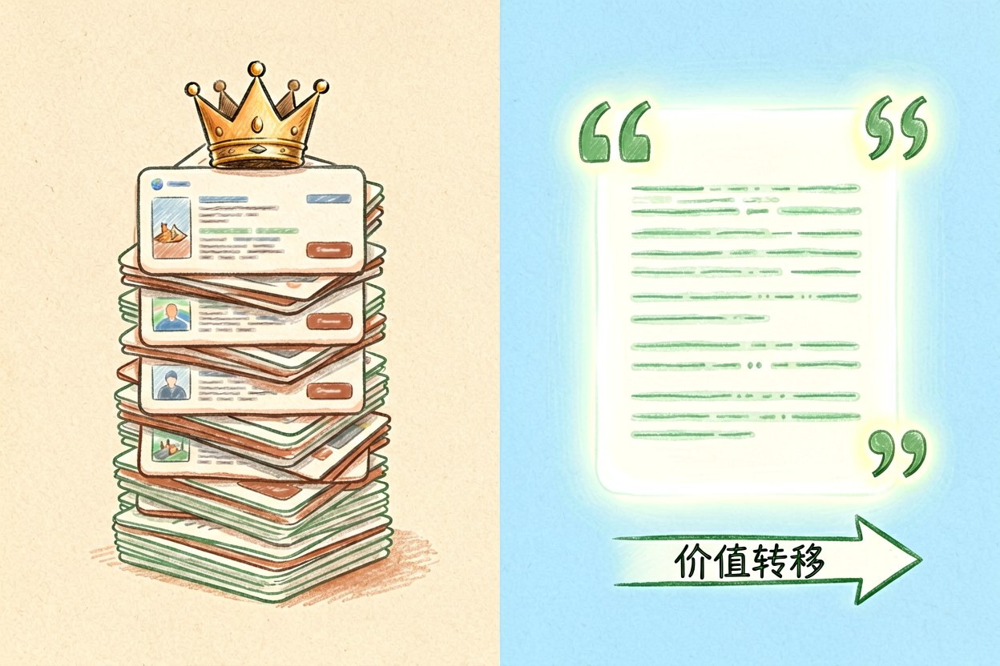
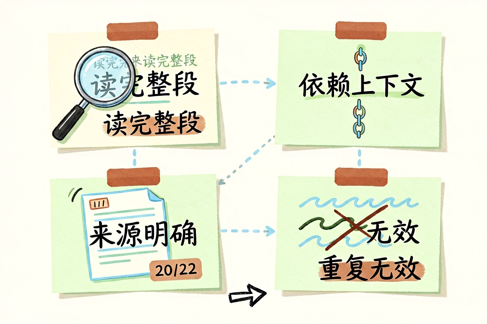
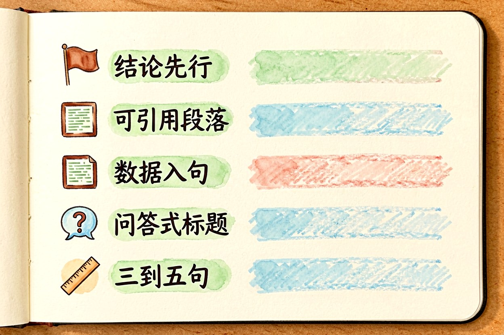
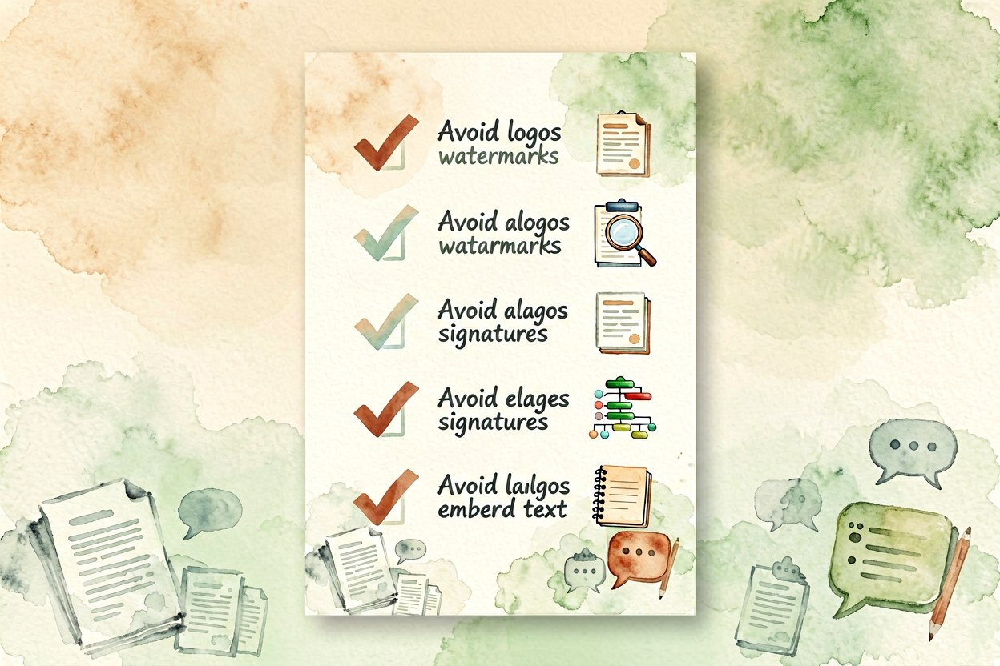

GEO 优化是什么：让 AI 搜索愿意引用你的内容
同一篇内容，在搜索结果里排到第十页，可能仍然被 AI 摘出来当答案。这两套规则并不通用。
GEO优化要回答的问题很朴素：当用户不再点开网页，而是直接问对话式搜索，你的内容凭什么被选中。它不推翻传统做法，但确实换了一套评判标准，段落能不能被整块摘走，比页面整体权重更要紧。
GEO优化要解决的是被引用问题

传统搜索的产物是一串链接，用户自己挑。对话式搜索的产物是一段答案，用户看到的是被摘取的片段。这意味着内容的价值从"排在前面"变成"说得清楚到值得引用"。一个能直接回答问题的段落，比十段铺垫更有机会被摘走。位置仍然重要，但决定权从排名算法转到了模型对内容的判断上。
二、AI 搜索和传统搜索差在哪

第一，它能读完整段，不只看标题和关键词密度。第二，它更依赖上下文，一段话脱离前后文能否自洽很关键。第三，它倾向引用结构清晰、来源明确的内容，带日期和出处的数据更容易被采信。第四，它对重复内容不敏感，同一观点写十遍不会加分。理解了这四点，很多老做法就自然失效了。规则变了。
三、内容要改的是这几个地方

开头直接给出结论，别用三行铺垫。每个小标题下写成能被独立引用的完整段落，主语写清楚，别用"它""这个"这类指代。把关键数据、时间、范围写在句子里，而不是藏在图表或图片里。问答式的小标题比名词式小标题更容易被匹配到。段落长度控制在三到五句，太长会被截断，太短又缺少判断依据。
{
"@context": "https://schema.org",
"@type": "FAQPage",
"mainEntity": [{
"@type": "Question",
"name": "GEO优化和传统SEO有什么区别",
"acceptedAnswer": {
"@type": "Answer",
"text": "传统 SEO 关注页面排名，GEO 关注段落能否被直接引用。"
}
}]
}四、结构化数据起辅助作用
结构化数据本身不保证被引用，它的作用是把内容的关系说清楚：这是问答、这是步骤、这是产品参数。对容易混淆的实体，加上明确定义能减少误判。别为了结构化而堆砌字段，题文不符反而会被判为低质量。真正有用的是那几段和页面主题直接对应的问答。
五、效果怎么衡量
传统排名指标在这里会失灵，因为很多引用不带来点击。更实际的观察方式是定期在几个对话式搜索里问自己的核心问题，看有没有出现你的内容，以及被摘的是哪一段。把被引用的段落记录下来，反推它符合了哪些特征，再复制到其他页面。这个动作坚持三个月，你会比任何工具报告都更了解自己的内容处境。记录比感觉可靠。
做这件事别指望速成。GEO优化靠的是持续把内容写清楚、把来源标明白，而不是追某个技巧。也别为了让模型引用而堆砌关键词，那样只会让段落失去可读性，人先不看，机器也未必采信。

本文信息核对于 2026-09-14。AI 产品的价格、免费额度与功能变动频繁，实际以各工具官网当前说明为准。